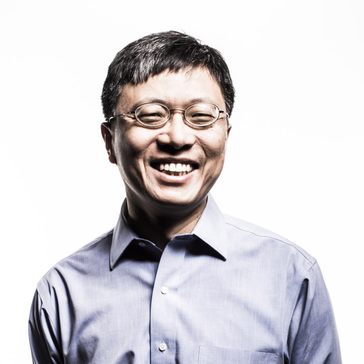

Keynotes
Harry Shum
Executive Vice President
Microsoft
Title: From Search to Research: Direct answers, Perspectives and Dialog
Abstract: Advances in artificial intelligence have improved machine understanding of speech,
images, and natural language. This in turn has allowed us to greatly enhance the intelligence of
products such as Bing and Cortana. This keynote describes our continuing journey beyond
keyword-driven systems, into dialog and intelligent agent functionality, helping our users
"research more, search less".
Modern systems attempt to provide concise direct answers, which can fit on a small screen or
become a spoken response. To find such answers, Microsoft can draw from a uniquely broad
inventory of data sources such as the Bing Web & Knowledge graphs, the workplace graph of Office
365, and the Microsoft Academic Graph. Since these graphs contain a lot of text information, we
apply machine reading and comprehension technology to extract concise answers. Microsoft has
entries frequently topping the leaderboards in the community's machine reading contests.
To select the right answers, we use deep multi-task learning to develop a vector representation
that is usable across multiple data sources and scenarios. This is combined with a large-scale
data processing and serving infrastructure. We use this not only to find a single answer, but
also to find multiple answers in cases where multiple valid perspectives exist. In the case of
numeric answers, we provide some context to help users understand what the numbers mean. This is
part of our effort to consider not just IQ but EQ in our conversational systems, where the
chatbot Xiaoice leads the way in establishing a human connection, to develop long and sustained
conversations.
These advances improve product quality, enable new user experiences and have challenged us to
rethink the entire intelligent search platform at Microsoft.
Bio: Harry Shum is executive vice president of Microsoft’s Artificial Intelligence (AI) and Research group. He is responsible for driving the company’s overall AI strategy and forward-looking research and development efforts spanning infrastructure, services, apps and agents. He oversees AI-focused product groups — the Information Platform Group, Bing and Cortana product groups — and the Ambient Computing and Robotics teams. He also leads Microsoft Research, one of the world’s premier computer science research organizations, and its integration with the engineering teams across the company. Previously, Dr. Shum served as the corporate vice president responsible for Bing search product development from 2007 to 2013. Prior to his engineering leadership role at Bing and online services, he oversaw the research activities at Microsoft Research Asia and the lab’s collaborations with universities in the Asia Pacific region, and was responsible for the Internet Services Research Center, an applied research organization dedicated to advanced technology investment in search and advertising at Microsoft. Dr. Shum joined Microsoft Research in 1996 as a researcher based in Redmond, Washington. In 1998 he moved to Beijing as one of the founding members of Microsoft Research China (later renamed Microsoft Research Asia). There he began a nine-year tenure as a researcher, subsequently moving on to become research manager, assistant managing director and managing director of Microsoft Research Asia and a Distinguished Engineer. Dr. Shum is an IEEE Fellow and an ACM Fellow for his contributions to computer vision and computer graphics. He received his Ph.D. in robotics from the School of Computer Science at Carnegie Mellon University. In 2017, he was elected to the National Academy of Engineering of the United States.
SlidesIgor Perisic
Chief Data Officer
LinkedIn
Title: Conversations, Machine Learning and Privacy: LinkedIn's Path towards Transforming Interaction with its Members
Abstract: At LinkedIn, we believe that having the right conversations with our members
is
key to unlocking economic opportunity for them. For us, these conversations are in a broader
context than traditionally-defined dialogues. A typical dialogue usually only considers a
limited time-window as context and is trying to satisfy an immediate intent. Advanced dialogue
systems allow an user to take a number of turns, in that short-time window, to get clear on the
user's intent. However, our members are having conversations with us over long periods of time
about their long-term goals, such as staying informed, growing a professional network, advancing
a career, getting a job, finding qualified leads, etc.
These conversational goals are often hierarchical. For example, getting a great job is a key
part of advancing your career. Our goal at LinkedIn is to be able to have simultaneous
conversations with our members on all of these levels. To do this, we have to build
machine-learning systems that understand that there are multiple multi-level conversations going
on. We have made strong headway in building components of this conversational vision by learning
how to approximate long-term member value and defining an optimization framework that can
incorporate multiple conflicting objectives. These problems consider the states of these
conversations when interacting with our members and actively make decisions that optimize this
ongoing dialogue. We have a challenging and interesting road ahead.
In this talk, Igor will present the current state of LinkedIn's machine-learning efforts towards
building robust, long-term conversational systems. He will then discuss the potential privacy
and ethical issues surrounding having these conversational interactions through an
ever-increasing number of touchpoints with our members.
Bio: Igor Perisic, Ph.D. is the Chief Data Officer (CDO) and Vice President (VP) of Engineering at LinkedIn. As CDO, he is responsible for all data policy issues and collaborates with our product, security, and legal teams to ensure that we are investing in technology, policies, and controls that will allow LinkedIn to continue to rapidly and safely scale our portfolio of product offerings to an ever broadening audience of members and customers. In addition, Igor Perisic runs LinkedIn’s Data engineering team which focuses on building data infrastructure, personalizing our members experiences through AI and creating Analytics insights and metrics related to our business and members experiences. Igor graduated with a Diplome d’Ingenieur en Mathematique from the Ecole Polytechnique Federale de Lausanne in Switzerland and holds a Ph.D. in Statistics from Harvard.
SlidesShang-Hua Teng
University Professor
USC
Title: Scalable Algorithms in the Age of Big Data and Network Sciences: Characterization, Primitives, and Techniques
Abstract: In the age of network sciences and machine learning, efficient algorithms are now in
higher demand more than ever before. Big Data fundamentally challenges the classical notion of
efficient algorithms: Algorithms that used to be considered efficient, according to
polynomial-time characterization, may no longer be adequate for solving today's problems. It is
not just desirable, but essential, that efficient algorithms should be scalable. In other words,
their complexity should be nearly linear or sub-linear with respect to the problem size. Thus,
scalability, not just polynomial-time computability, should be elevated as the central
complexity notion for characterizing efficient computation. Using several basic tasks in network
analysis, machine learning, and optimization as examples - in this talk - I will highlight a
family of fundamental algorithmic techniques for designing provably-good scalable algorithms.
Bio: Shang-Hua Teng is the University Professor and Seeley G. Mudd Professor of Computer Science and Mathematics at University of Southern California. He has twice won the prestigious Gödel Prize in theoretical computer science, first in 2008, for developing the theory of smoothed analysis , and then in 2015, for designing the groundbreaking nearly-linear time Laplacian solver for network systems. Prior to joining USC in 2009, he was a professor at Boston University. He has also taught at MIT, the University of Minnesota, and the University of Illinois at Urbana-Champaign. He has worked at Xerox PARC, NASA Ames Research Center, Intel Corporation, IBM Almaden Research Center, Akamai Technologies, Microsoft Research Redmond, Microsoft Research New England and Microsoft Research Asia. Teng is a Fellow of the Association for Computing Machinery (ACM), as well as an Alfred P. Sloan fellow.
SlidesJudea Pearl
Turing Award Winner
UCLA
Title: Theoratical Impediments to Machine Learning With Seven Sparks from the Causal Revolution
Abstract: Current machine learning systems operate, almost exclusively, in a statistical, or
model-blind mode, which entails severe theoretical limits on their power and performance. Such
systems cannot reason about interventions and retrospection and, therefore, cannot serve as the
basis for strong AI. To achieve human level intelligence, learning machines need the guidance of
a model of reality, similar to the ones used in causal inference. To demonstrate the essential
role of such models, I will present a summary of seven tasks which are beyond reach of current
machine learning systems and which have been accomplished using the tools of causal inference.
Bio: Judea Pearl created the representational and computational foundation for the processing of information under uncertainty. He is credited with the invention of Bayesian networks, a mathematical formalism for defining complex probability models, as well as the principal algorithms used for inference in these models. This work not only revolutionized the field of artificial intelligence but also became an important tool for many other branches of engineering and the natural sciences. He later created a mathematical framework for causal inference that has had significant impact in the social sciences. Judea is the 2011 winner of the ACM Turing Award, the highest distinction in computer science, "for fundamental contributions to artificial intelligence through the development of a calculus for probabilistic and causal reasoning".
SlidesAndrei Broder
Distinguished Scientist
Google
Title: A Call To Arms: Embrace Assistive AI Systems!
Abstract: A quarter-century ago Web search stormed the world: within a few years the Web search
box became a standard tool of daily life ready to satisfy informational, transactional, and
navigational queries needed for some task completion. However, two recent trends are
dramatically changing the box's role: first, the explosive spread of smartphones brings
significant computational resources literally into the pockets of billions of users; second,
recent technological advances in machine learning and artificial intelligence, and in particular
in speech processing led to the wide deployment of assistive AI systems, culminating in personal
digital assistants. Along the way, the ``Web search box'' has become an ``assistance request
box'' (implicit, in the case of voice-activated assistants) and likewise, many other information
processing systems (e.g. e-mail, navigation, personal search, etc) have adopted assistive
aspects.
Formally, the assistive systems can be viewed as a selection process within a base set of
alternatives driven by some user input. The output is either one alternative or a smaller set of
alternatives, maybe subject to future selection. Hence, classic IR is a particular instance of
this formulation, where the input is a textual query and the selection process is relevance
ranking over the corpus.
In increasing order of selection capabilities, assistive systems can be classified into three
categories:
- Subordinate: systems where the selection is fully specified by the request; if this results in a singleton the system provides it, otherwise the system provides a random alternative from the result set. Therefore, the challenge for subordinate systems consists only in the correct interpretation of the user request (e.g., weather information, simple personal schedule management, a ``play jazz'' request).
- Conducive: systems that reduce the set of alternatives to a smaller set, possibly via an interactive process (e.g. the classic ten blue links, the three ``smart replies'' in Gmail, interactive recommendations, etc).
- Decisive: systems that make all necessary decisions to reach the desired goal (in other words, select a single alternative from the set of possibilities) including resolving ambiguities and other substantive decisions without further input from the user (e.g., typical translation systems, self-driving cars).
Bio: Andrei Broder is a Distinguished Scientist at Google where he leads a multidisciplinary research team located across three continents. From 2005 to 2012 he was a Fellow and VP for Computational Advertising at Yahoo. Previous positions include Distinguished Engineer at IBM and VP for Research and Chief Scientist at AltaVista. He was graduated Summa cum Laude from Technion and obtained his M.Sc. and Ph.D. in Computer Science at Stanford under Don Knuth. Broder has authored more than a hundred papers and was awarded fifty US patents. His current research interests are focused on user understanding, computational advertising, context-driven information supply, and randomized algorithms. He is a member of the US National Academy of Engineering and a Fellow of ACM and of IEEE. Other honors include the ACM Paris Kanellakis Theory and Practice Award and a doctorate Honoris Causa from Technion.
Slides
Jiawei Han
Abel Bliss Professor
UIUC
Title: On the Power of Massive Text Data
Abstract: The real-world big data is largely unstructured, dynamic, and inter- connected, in the form of natural language text. It is highly desirable to transform such massive unstructured data into structured knowl- edge. Many researchers and practitioners rely on labor-intensive labeling and curation to extract knowledge from unstructured text data. However, such approaches may not be scalable to web-scale or adaptable to new domains, especially considering that a lot of text corpora are highly dynamic and domain-specific. We argue that massive text data itself contains a large body of hidden patterns, structures, and knowledge. Equipped with domain-independent and domain-specific knowledge-bases, a promising direction is to develop more systematic data mining methods to turn massive unstructured text data into structured knowledge.
We introduce a set of methods developed recently in our own group on exploration of the power of big text data, including mining quality phrases using unsupervised, weakly supervised and distantly supervised approaches, recognition and typing of entities and relations by distant supervision, meta-pattern-based entity- attribute-value extraction, set expansion and local embedding-based multi-faceted taxonomy discovery, allocation of text documents into multi-dimensional text cubes, construction of heterogeneous information networks from text cube, and eventually mining multi- dimensional structured knowledge from massive text data. We show that massive text data itself can be powerful at disclosing patterns, structures and hidden knowledge, and it is promising to explore the power of massive, interrelated text data for transforming such unstructured data into structured knowledge.
Bio: Jiawei Han is the Abel Bliss Professor in the Department of Computer Science, University of Illinois at Urbana-Champaign. He has been researching into data mining, information network analysis, database systems, and data warehousing. He is a Fellow of ACM and Fellow of IEEE, and received 2004 ACM SIGKDD Innovations Award, 2005 IEEE Computer Society Technical Achievement Award, 2009 IEEE Computer Society Wallace McDowell Award, and 2011 Daniel C. Drucker Eminent Faculty Award at UIUC. His book "Data Mining: Concepts and Techniques" has been adopted as a textbook popularly worldwide.
Slides